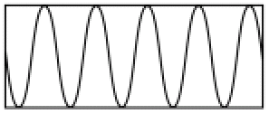
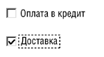
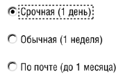
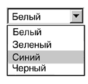
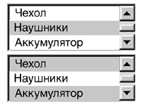
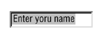
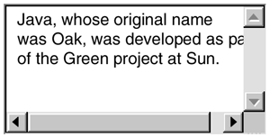
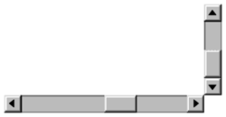
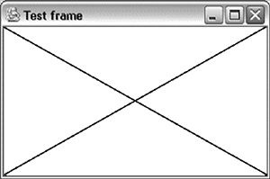

Наследники класса Component
Теперь, когда рассмотрены основные принципы работы классов Component и Container, рассмотрим их наследников, с помощью которых и строится функциональный пользовательский интерфейс.
Начнем с наследников класса Component.
Класс Canvas
Класс Canvas является простейшим наследником Component. Он не добавляет никакой новой функциональности, но именно его нужно использовать в качестве суперкласса для создания пользовательского компонента с некоторым нестандартным внешним видом.
Ниже приведен пример определения компонента, который отображает график функции sin(x):
public class SinCanvas extends Canvas {
public void paint(Graphics g) {
int height = getHeight(),
width = getWidth();
// Вычисляем масштаб таким образом,
// чтобы на компоненте всегда умещалось
// 5 периодов
double k=2*Math.PI*5/width;
int sy = calcY(0, width, height, k);
for (int i=1; i<width; i++) {
int nsy = calcY(i, width, height, k);
g.drawLine(i-1, sy, i, nsy);
sy=nsy;
}
}
// метод, вычисляющий значение функции
// для отображения на экране
private int calcY(int x, int width,
int height, double k) {
double dx = (x-width/2.)*k;
return (int)(height/2.*(1-Math.sin(dx)));
}
}
Как видно из примера, достаточно лишь переопределить метод paint. Вот как выглядит такой компонент:

Рис.
Класс Label
Как понятно из названия, этот компонент отображает надпись. Соответственно, и его основной конструктор принимает один аргумент типа String – текст надписи. С помощью стандартных свойств класса Component – шрифт, цвет, фоновый цвет – можно менять вид надписи. Текст можно сменить и после создания Label с помощью метода setText.
Обратите внимание, что при этом компонент сам обновляет свой вид на экране. Такой особенностью обладают все стандартные компоненты AWT.
Класс Button
Этот компонент позволяет добавить в интерфейс стандартные кнопки. Основной конструктор принимает в качестве аргумента String – надпись на кнопке. Как обрабатывать нажатие на кнопку и другие пользовательские события, рассматривается ниже.
Классы Checkbox и CheckboxGroup
Компонент Checkbox имеет два способа применения.
Когда он используется сам по себе, он представляет checkbox – элемент, который может быть выделен или нет (например, нужна доставка для оформляемой покупки или нет). В этом случае в конструктор передается лишь текст – подпись к checkbox.
Рассмотрим пример, в котором в теле контейнера добавляется два checkbox:
Checkbox payment = new
Checkbox("Оплата в кредит");
payment.setBounds(10, 10, 120, 20);
add(payment);
Checkbox delivery = new Checkbox("Доставка");
delivery.setBounds(10, 30, 120, 20);
add(delivery);
Ниже приведен внешний вид такого контейнера:

Рис.
Обратите внимание, что размер Checkbox должен быть достаточным для размещения не только поля для "галочки", но и для подписи.
Второй способ применения компонент Checkbox предназначен для организации "переключателей" (radio buttons). В этом случае несколько экземпляров объединяются в группу, причем лишь один их переключателей может быть выбран. В роли такой группы выступает класс CheckboxGroup. Он не является визуальным, то есть никак не отображается на экране. Его задача – логически объединить несколько Checkbox. Группу, к которой принадлежит переключатель, можно указывать в конструкторе:
CheckboxGroup delivery = new CheckboxGroup();
Checkbox fast = new Checkbox(
"Срочная (1 день)", delivery, false);
fast.setBounds(10, 10, 150, 20);
add(fast);
Checkbox normal = new Checkbox(
"Обычная (1 неделя)", delivery, true);
normal.setBounds(10, 30, 150, 20);
add(normal);
Checkbox postal = new Checkbox(
"По почте (до 1 месяца)",
delivery, false);
postal.setBounds(10, 50, 150, 20);
add(postal);Ниже приведен внешний вид такого контейнера:

Рис.
В примере при вызове конструктора класса Checkbox помимо текста подписи и группы, указывается состояние переключателя (булевский параметр). Обратите внимание на изменение внешнего вида компонента (форма поля сменилась с квадратной на круглую, как и принято в традиционных GUI).
Классы Choice и List
Компонент Choice служит для выбора пользователем одного из нескольких возможных вариантов (выпадающий список). Рассмотрим пример:
Choice color = new Choice();
color.add("Белый");
color.add("Зеленый");
color.add("Синий");
color.add("Черный");
add(color);
В обычном состоянии компонент отображает только выбранный вариант. В процессе выбора отображается весь набор вариантов. На рисунке представлен выпадающий список в обоих состояниях:

Рис.
Обратите внимание, что для компонента Choice всегда есть выбранный элемент.
Компонент List, подобно Choice, предоставляет пользователю возможность выбирать варианты из списка предложенных. Отличие заключается в том, что List отображает сразу несколько вариантов. Количество задается в конструкторе:
List accessories = new List(3);
accessories.add("Чехол");
accessories.add("Наушники");
accessories.add("Аккумулятор");
accessories.add("Блок питания");
add(accessories);Вот как выглядит такой компонент (верхняя часть рисунка):

Рис.
В списке находится 4 варианта. Однако в конструктор был передан параметр 3, поэтому только 3 из них видны на экране. С помощью полосы прокрутки можно выбрать остальные варианты.
Рисунок иллюстрирует еще одно свойство List – возможность выбрать сразу несколько из предложенных вариантов. Для этого надо либо в конструкторе вторым параметром передать булевское значение true (false соответствует выбору только одного элемента), либо воспользоваться методом setMultipleMode.
Классы TextComponent, TextField, TextArea
Класс TextComponent является наследником Component и базовым классом для компонент, работающих с текстом,– TextField и TextArea.
TextField позволяет вводить и редактировать одну строку текста. Различные методы позволяют управлять содержимым этого поля ввода:
TextField tf = new TextField();
tf.setText("Enter your name");
tf.selectAll();
add(tf);Вот как будет выглядеть этот компонент:

Рис.
В коде вторая строка устанавливает значение текста в поле ввода (метод getText позволяет получить текущее значение). Затем весь текст выделяется (есть методы, позволяющие выделить часть текста).
Для любой текстовой компоненты можно задать особый режим. В базовом классе Component определено свойство enabled, которое, если выставлено в false, блокирует все пользовательские события. Для текстовой компоненты вводится новое свойство – editable (можно редактировать), методы для работы с ним – isEditable и setEditable. Если текст нельзя редактировать, но компонент доступен, то пользователь может выделить часть, или весь текст, и, например, скопировать его в буфер.
TextField обладает еще одним свойством. Все хорошо знакомы с полем ввода для пароля – вводимые символы не отображаются, вместо них появляется один и тот же символ. Для TextField его можно установить с помощью метода setEchoChar (например, setEchoChar(‘*’)).
TextArea позволяет вводить и просматривать многострочный текст. В конструктор передается количество строк и столбцов, которые определяют размер компонента (вычисляется на основе средней ширины символа). Эти параметры не ограничивают длину вводимого текста – при необходимости появляются полосы прокрутки:

Рис.
Класс Scrollbar
Класс Scrollbar позволяет работать с полосами прокрутки, которые используются для перемещения внутренней области от начальной до конечной позиции. Полоса может быть расположена горизонтально или вертикально. Стрелки на каждом из ее концов служат для перемещения "на один шаг" в соответствующем направлении. "Взявшись" курсором мыши за бегунок, можно переместить его в любую позицию. С помощью кликов мыши по полосе прокрутки, но вне положения бегунка, можно делать перемещение "на страницу" вверх или вниз. Все эти действия хорошо знакомы по многим пользовательским интерфейсам, например, Windows. Они полностью поддерживаются компонентом Scrollbar.
Конструктор позволяет задавать ориентацию полосы прокрутки — для этого предусмотрены константы VERTICAL и HORIZONTAL. Кроме того, с помощью конструктора можно задать начальное положение бегунка, размер "страницы", а также минимальное и максимальное значения, в пределах которых линейка прокрутки может изменять параметр. Для получения и установки текущего состояния полосы прокрутки используются методы getValue и setValue. Ниже приведен пример, в котором создается и вертикальный, и горизонтальный Scrollbar.
int height = getHeight(), width = getWidth();
int thickness = 16;
Scrollbar hs = new Scrollbar(
Scrollbar.HORIZONTAL, 50,
width/10, 0, 100);
Scrollbar vs = new Scrollbar(
Scrollbar.VERTICAL, 50,
height/2, 0, 100);
add(hs); add(vs);
hs.setBounds(0, height - thickness,
width - thickness, thickness);
vs.setBounds(width - thickness, 0, thickness,
height - thickness);
В этом примере скроллируется, конечно, пустая область:

Рис.
Наследники Container
Теперь перейдем к рассмотрению стандартных контейнеров AWT.
Класс Panel
Подобно тому, как Canvas служит базовым классом для создания своих компонент с особым внешним видом, класс Panel является суперклассом для новых контейнеров с особой работой с вложенными компонентами. Впрочем, поскольку Panel, в отличие от Container, класс не абстрактный, его можно использовать для иерархической организации сложного пользовательского интерфейса, группируя компоненты в такие простейшие контейнеры.
Класс ScrollPane
Выше был рассмотрен компонент Scrollbar, предназначенный для полосы прокрутки. Если стоит задача, например, показать пользователю график некоторой функции с возможностью просмотра для изучения различных областей, необходимо создать две полосы прокрутки, правильно их установить и в дальнейшем обрабатывать все действия пользователя, вычислять новое положение видимой области, перерисовывать график и т.д.
В большинстве случаев все эти задачи может взять на себя контейнер ScrollPane. Этот контейнер обладает рядом особенностей. Во-первых, в него можно поместить лишь одну компоненту – при добавлении новой старая удаляется. Во-вторых, отличается работа с вложенным компонентом, чьи границы выходят за границы самого контейнера. Как мы рассматривали раньше, "выступающие" области никогда не будут отображены на экране. В контейнере ScrollPane в этом случае появляются полосы прокрутки (горизонтальная или вертикальная), с помощью которых можно промотать видимую область и таким образом увидеть весь компонент полностью. При этом не нужно предпринимать никаких дополнительных действий – надо лишь добавить компонент в ScrollPane.
Может вызвать удивление, почему разрешается добавление лишь одного компонента. А если нужно проматывать более сложную конструкцию? Здесь и проявляется польза класса Panel. Все элементы собираются в этот простейший контейнер, который, в свою очередь, добавляется в ScrollPane.
Конструктор этого класса может принимать параметр, задающий логику появления полос прокрутки – они могут быть видимы всегда, появляться по мере необходимости, либо не появляться никогда.
Класс Window
Из опыта работы с оконными графическими интерфейсами современных операционных систем мы привыкли к тому, что каждое приложение обладает одним или несколькими окнами. Класс Window служит базовым классом для всех окон, порождаемых из Java. Разумеется, он также является интерфейсом к соответствующему окну операционной системы, которая обслуживает окна всех приложений.
Как правило, используется один из двух наследников Window – классы Frame и Dialog, которые будут рассмотрены следующими. Однако экземпляры Window не обладают ни рамкой, ни кнопками закрытия или минимизации окна, а потому зачастую используются как заставки (так называемые splash screen).
Конструктор Window требует в качестве аргумента ссылку на Window или Frame. Другими словами, базовые окна не являются самостоятельными, они привязываются к другим окнам.
Классы Frame и Dialog
Класс Frame предназначен для создания полнофункциональных окон приложений – с полосой заголовка, рамкой, кнопками закрытия, минимизации и максимизации окна. Поскольку Frame, как правило, является главным окном приложения, он создается невидимым, чтобы можно было настроить все его параметры, добавить все вложенные контейнеры и компоненты и лишь затем отобразить его в подготовленном виде. Конструктор принимает текстовый параметр – заголовок фрейма.
Рассмотрим пример организации работы с фреймом, который отображает компонент из первого примера лекции ("Алгоритм отрисовки").
public class TestCanvas extends Canvas {
public void paint(Graphics g) {
g.drawLine(0, 0, getWidth(), getHeight());
g.drawLine(0, getHeight(),getWidth(), 0);
}
public static void main(String arg[]) {
Frame f = new Frame("Test frame");
f.setSize(400, 300);
f.add(new TestCanvas());
f.setVisible(true);
}
}
Окно запущенной программы будет выглядеть следующим образом:

Рис.
Обратите внимание, что это окно не будет закрываться по нажатию правой верхней кнопки в заголовке. Причина будет разъяснена ниже.
Если класс Frame предназначен для создания основного окна приложения, то экземпляры класса Dialog позволяют открывать дополнительные окна для взаимодействия с пользователем. Это может потребоваться, например, для вывода критического сообщения, для ввода параметров и т.д.. Окно диалога обладает стандартным оформлением – полоса заголовка, рамка. В правой части полосы заголовка присутствует лишь одна кнопка – закрытия окна.
Поскольку Dialog является несамостоятельным окном, в конструктор необходимо передать ссылку на родительский фрейм или окно другого диалога. Также можно задать заголовок окна. Как и Frame, диалоговое окно создается изначально невидимым.
Важным свойством диалогового окна является модальность. Если диалог модальный, то при его появлении на экране блокируются все пользовательские события, приходящие в родительское окно такого диалога.
Класс FileDialog
Класс FileDialog является модальным диалогом (наследником Dialog) и позволяет легко организовать работу с файлами. Этот класс предназначен и для открытия файла (open file), и для сохранения (save file). Окно диалога имеет внешний вид, принятый для текущей операционной системы.
Конструктор принимает в качестве параметров ссылку на родительский фрейм, заголовок окна и режим работы. Для задания режима в классе определены две константы – LOAD и SAVE.
После создания диалога FileDialog его необходимо сделать видимым. Затем пользователь делает свой выбор. После закрытия диалога результат можно узнать с помощью методов getDirectory (для получения полного имени каталога) и getFile (для получения имени файла). Если пользователь нажал кнопку "Отмена" ("Cancel"), то будут возвращены значения null.
|